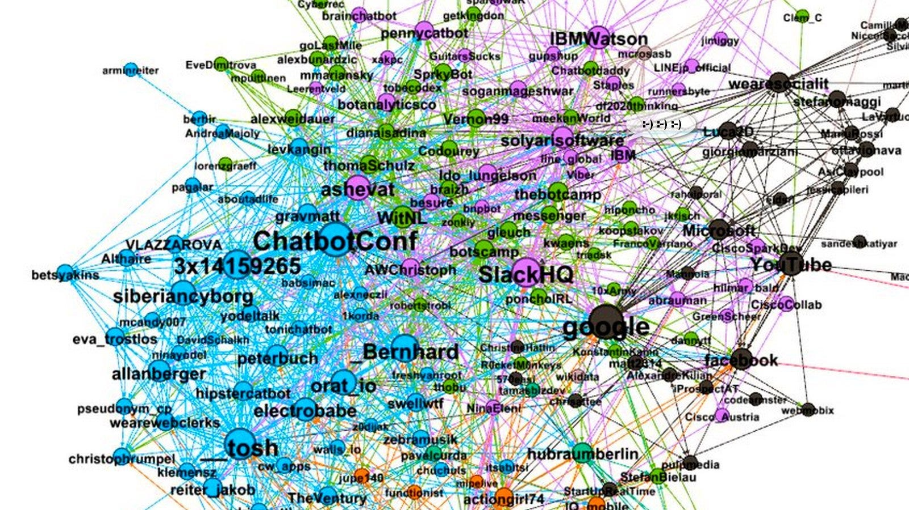
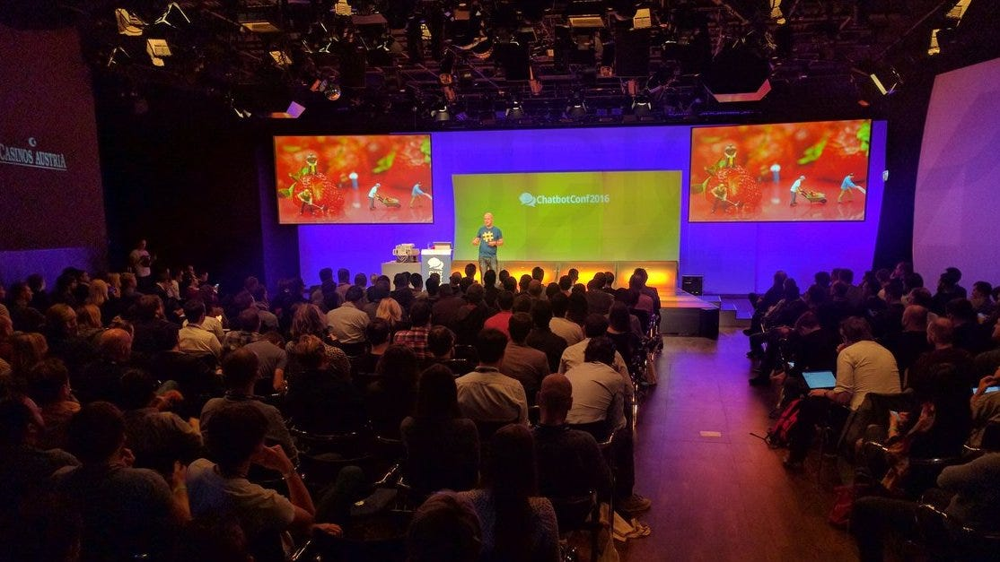
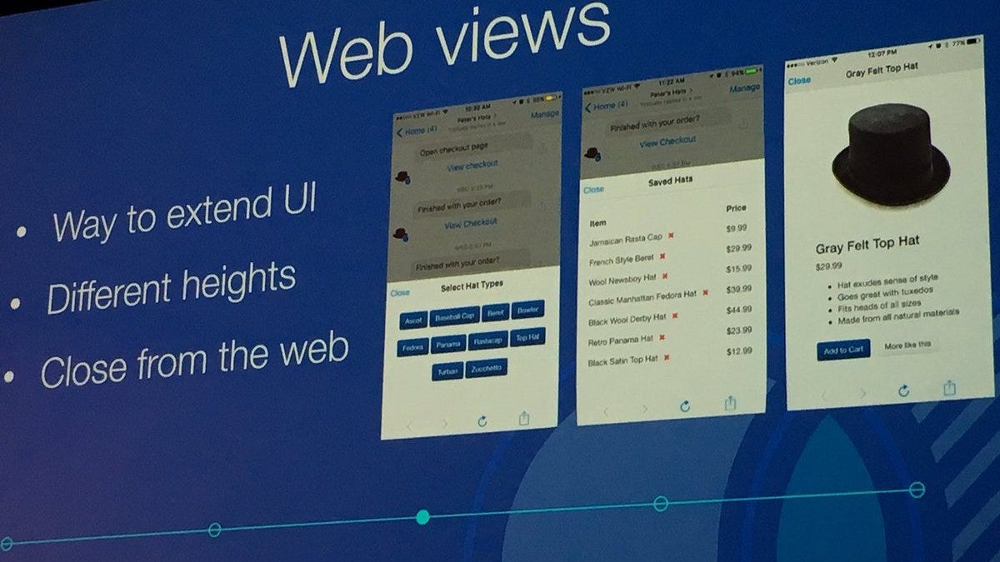
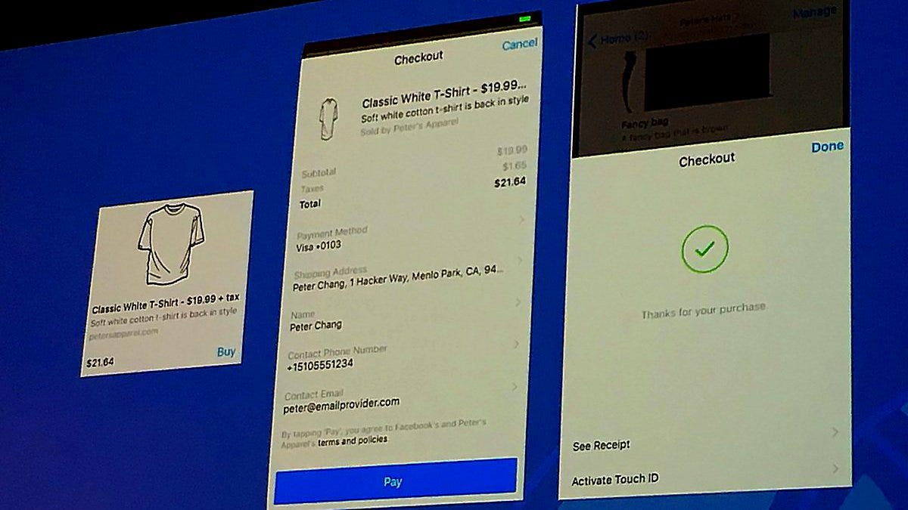
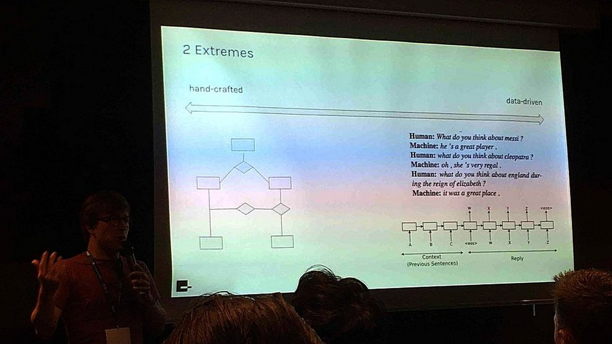
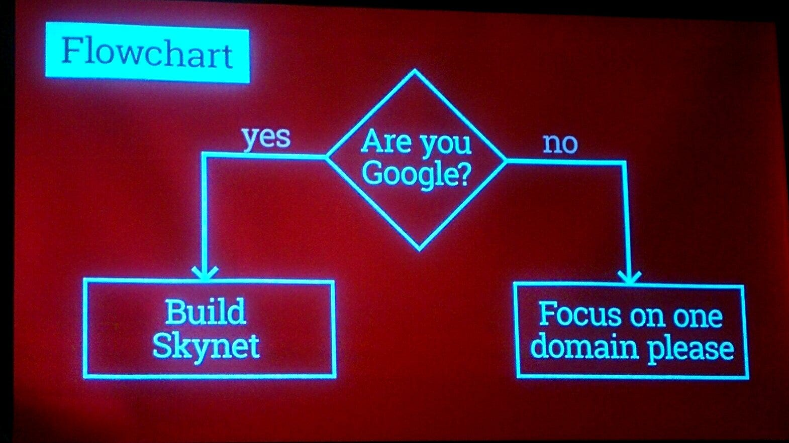
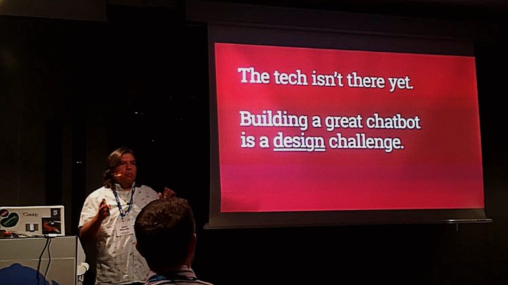
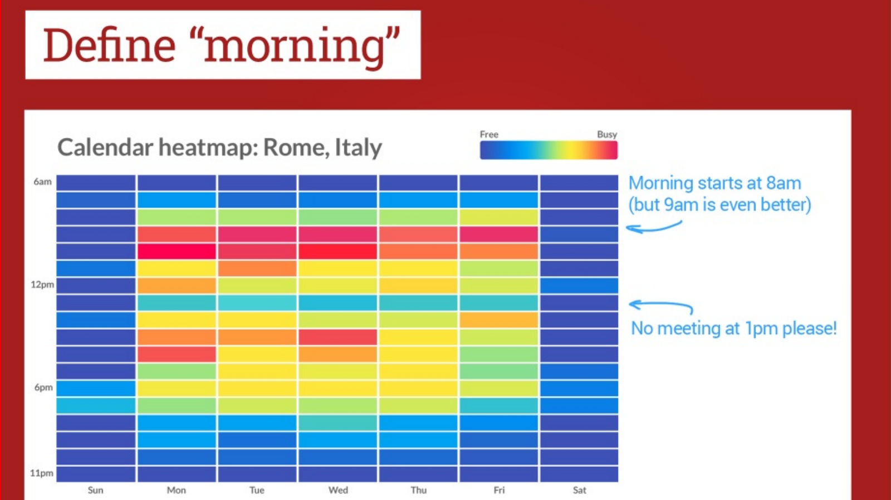
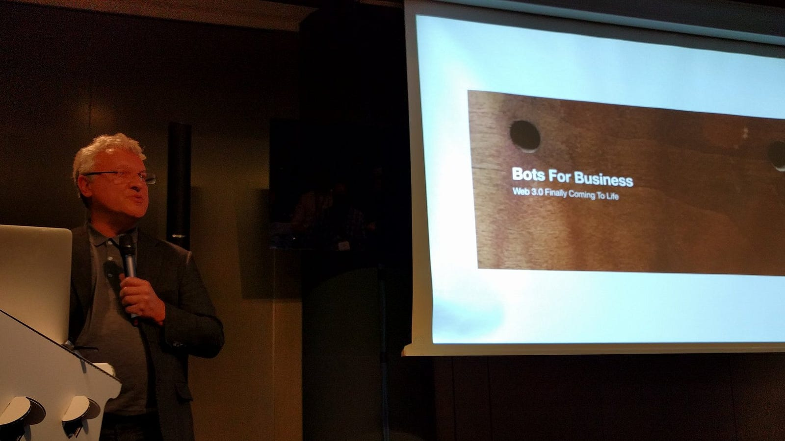
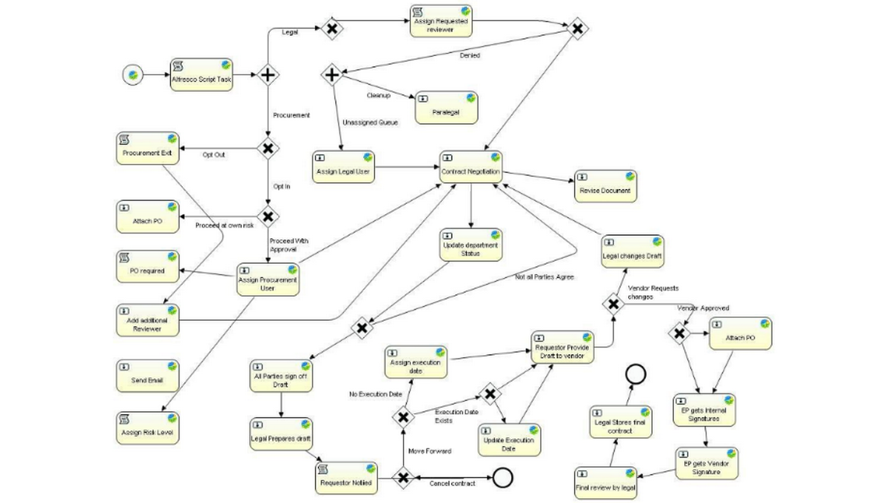

Sull’evento ChatbotConf 2016 di Vienna!
Update 4 Novembre: tutte le registrazioni video dell’evento #cbc16: qui!

Update 4 Novembre: tutte le registrazioni video dell’evento #cbc16: qui!
Non c’è dubbio: #cbc16, l’evento sui chatbots ChatbotConf2016 organizzato ieri dagli amici di orat_io di Vienna è stato davvero eccellente!
Organizzazione alla stra-grande, speaker d’eccezione, molti dei quali provenienti da oltreoceano, copertura a tutto spettro delle aziende protagoniste internazionali (direi che tutte le aziende significative erano presenti: Slack, Facebook, Microsoft, IBM, Google, prima presenza della giapponese LINE in Europa… forse mancava WeChat, ma per il resto c’erano proprio tutti) e c’erano molte teste pensanti e qualche startup austriaca.
Wow!

Disclaimer: non ho partecipato personalmente all'evento, ma l’ho seguito su twitter quasi tutto il giorno… scrivo quindi qui qualche breve pensiero in base alle foto, ai commenti ed ai brevi botta-e-risposta su Twitter. Aspetto le slides e qualche insight di chi era all'evento e ha potuto forse parlare de visu con gli attori sul palco!
P.S. ringrazio Luca Dell’Ora ed il team di @wearesocialit che hanno twittato foto e video per tutta la durata dell’evento e che invito nuovamente qui a pubblicare/ripubblicare su www.convcomp2016.it il loro articolo/report ! :)
Cito qui di seguito solo alcuni tra gli speaker, sicuramente mi sono perso qualche altro intervento notevole, ma queste sono le persone che mi hanno subito impressionato:
Mikhail Larionov
Technical leader in Facebook, Mikhail ha fatto alcune anticipazioni su prossima release update della UI di Facebook Messenger Bot Platform, le cui API saranno probabilmente rilasciate entro la fine dell’anno.
E’ simpatico il fatto (una provocazione?:) ) che siano stati fatti riferimenti, in qualche slide, a Goggle Home ed Apple… hmm, prevedo che gennaio 2017 sarà un mese caldo per il #botdev :)
BTW, una domanda che avrei voluto fare a Mikhail è quella a riguardo dei rumors dell’entrata in campo di Whatsapp con i bots, con un’apertura dunque alle applicazione automatiche, mentre fino ad oggi sono stati banditi e perseguiti legalmente gli autori dei chatbot “non ufficiali” (sul fatto che Whatsapp ci stia ripensando, ci sono peraltro affermazioni ufficiali dico/non-dico di Whatsapp stessa , che ricordo essere azienda acquisita da Facebook).
Poco male; glielo chiederò personalmente presto. Ovviamente questo punto per noi in Italia è fondamentale: da tempo sostengo che la #boteconomy italiana decollerà quando sarà possibile sviluppare bot sulla piattaforma tanto odiata da noi nerd, ma che usa il 95% della popolazione italica…


video: https://www.youtube.com/watch?v=8GfNmPF7o2U
Alexander Weidauer
Alex, già creatore ed organizzatore dei ben fatti chatbots meetups di Berlino
Apro parentesi: i berlinesi e i viennesi sono stati primi in Europa ad organizzare meetup sulle tematiche dei chatbot, va detto! Proprio ai meetup di Berlino mi sono ispirato, con Giuditta Del Buono i primi giorni dell’anno per creare il primo evento italiano: #convcomp2016 che abbiamo poi realizzato il 24 giugno scorso (anche se il nostro intento era quello di estendere la partecipazione, oltre agli sviluppatori di bot, a tutte le persone che lavorano attorno al conversational computing nella ricerca scientifica, nel business, negli aspetti umanistici e ludici, di servizi ai cittadini, etc. etc. ma insomma questo già lo sapete se state leggendo questo articoletto)!
Alex, dicevo, ha presentato una slide che secondo me fotografa esattamente la situazione tecnologica attuale dei business chatbot.
- Da un lato infatti oggi è possibile creare chatbot di buon valore (secondo me) con tecniche “tradizionali”, che nella slide vengono dette hand-crafted e che corrispondono in pratica o sistemi wired/hard-coded, o a sistemi basati rule-based (vedi l’amato/dibattuto ChatScript dell’amico Bruce Wilcox);
- D’altro canto ci sono i sistemi che Alex chiama data-driven ed ovvero i modelli generativi di machine-learning; tecnologia, quest’ultima, di cui tutte le startup alla moda parlano ma che è, secondo me, ancora un terreno di ricerca pieno di trappole, quindi ci andrei molto cauto con una facile apologia del crowd-sourcing learning…
Comunque per me, quella riportata sotto è la slide più interessante dal punto di vista della tecnologia: a quando sistemi generativi di utilizzo pratico nel business? Già nel 2017?
Blog: Lastmile conversations

Matty Mariansky
Adoro quest’uomo. Ebbi qualche breve conversazione con lui l’anno scorso commentando suoi articoli sulla user experience conversazionale CUI/GUI, che riportavano la sua esperienza con la startup: www.meekan.com
Mi piace l’approccio di Matty, molto pragmatico e sincero, quando dice, con le slide, quello che io traduco scherzosamente così:
Caro sviluppatore startupparo, non sei Google né Facebook, giusto? ed allora lascia perdere la General Artificial Intelligence, ma focalizzati invece sul dominio applicativo su cui vuoi fare business o servizi utili alle persone, e fai un chatbot che risolva bene un problema applicativo specifico, con qualsiasi strumento informatico tu abbia a disposizione.
Matty riporta cioè l’attenzione alla UX/UI di un design (conversazionale) applicativo ben fatto. E lasciamo agli scienziati (di Facebook e Google e OpenAI, etc. etc. ) il compito di arrovellarsi sulla progettazione di macchine intelligenti di autoapprendimento del natural language understanding. Cognitivo a chi ? :-)
Slides: Memories of a bot trainer
Blog: Building the robot assistant
Video: https://www.youtube.com/watch?v=uHYQvb5wMOo



Alex Bunardzic
Conoscevo Alex per aver letto qualche suo interessante articolo di #botdev, come “How to Design a Bot Protocol”, e mi ha fatto piacere che lui sia stato relatore al #cbc16!


Alex Bunardzic mi ha cortesemente fornito le sue slides: “How To Avoid Pyramid Of Doom When Designing Bot Workflows” e mi è piaciuto tutto il suo taglio “personale”, ho trovato stimolante ogni punto e sono d’accordo su ogni tradeoff che presenta: concierge vs butler, stateless vs statefull, GAI vs workflow bots e…:
Bot workflow is an uncharted territory
Ma è nella parte meno filosofica (che peraltro condivido) e più pratica dello sviluppo software di workflow bots, che mi sono trovato particolarmente in sintonia, e in effetti lui raggiunge conclusioni simili a quelle su cui sto lavorando io stesso, con un mio piccolo progetto work in progress, che pubblicherò presto probabilmente come opensource, sviluppato in Ruby, dove le conversazioni (che io chiamo “contesti”) tra entità dialoganti (man-machine, ma anche machine to machine) vengono codificate come macchine a stati (nome in codice del mio micoframewrok è naif, stay tuned).
Slides: How To Avoid Pyramid Of Doom When Designing Bot Workflows
Blog: Bots for Business
Video: https://www.youtube.com/watch?v=IzNT1NPlVJU
Note:
l’info-grafica che ho messo nella copertina di questo articolo, mi vede presente :) in vicinanza con IBM, Facebook, altri super-big players e tanta altra bella gente! Chiudo allora con Luca Hammer che mi spiega come ha realizzato l’info-grafica in questo stupendo articolo:
Commentate numerosi!
giorgio